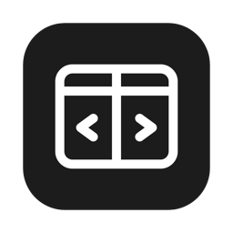

まどわけ
Mac のウインドウを、キーで左・上・右へ
ダウンロード
macOS 13 以降・無料
キー
はじめに
- 「アプリケーション」へ入れる「ダウンロード」フォルダの「まどわけ」を移す（zip のままなら、ダブルクリックで出てきます）
- ダブルクリック「開けません」と出たら「完了」。macOS 14 以前は、右クリック →「開く」で開けます
- 「このまま開く」右クリックで開けたら不要。システム設定 →「プライバシーとセキュリティ」→ 下の「セキュリティ」。パスワードを入れて「開く」
- アクセシビリティをオン出てくる案内から。出ないときはメニューバーの →「許可：オフ」。オンになると に変わります
- ⌘⌥← で試すウインドウが左半分に寄れば完了
Dock には出ず、メニューバーの だけに出ます。Chrome のタブ移動（⌘⌥←→）は使えなくなります。入れ直して動かないときは、アクセシビリティの一覧で「まどわけ」を「−」で消し、もう一度オンにしてください。